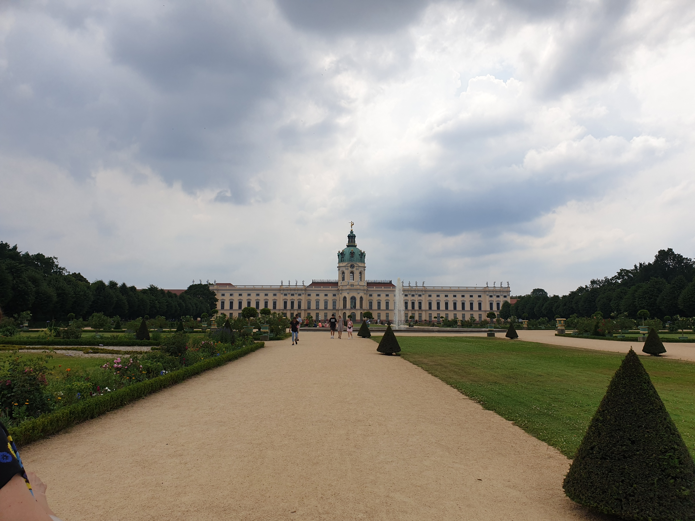
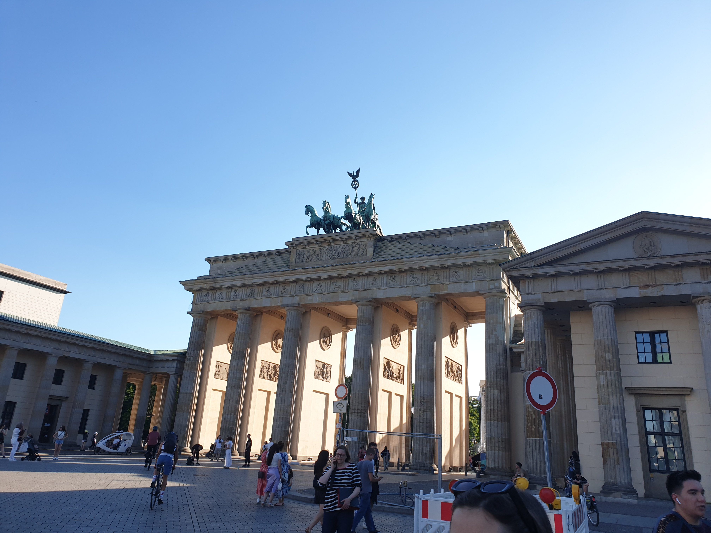

Berlin
Berlin je grad s opširnom prošlošću, a i mnogim inženjerskim ostvarenjima. Sva ta ostvarenja mogu se naći u berlinskom Tehničkom muzeju. U njemu se može mnogo naučiti o avionima, brodovima i vlakovima, ali i o nakitu, tekstilu, fotoaparatima.

Također u Berlinu se nalazi i Schloss Charlottenburg. Ta palača je sagrađen krajem 17. stoljeća, a proširena tijekom 18. stoljeća. Tijekom Drugog svjetskog rata bila je jako oštećena, no uspjeli su je obnoviti te je danas jedna od glavnih turističkih atrakcija u Berlinu.
Kada već spominjemo Drugi svjetski rat jedan od muzeja kojemu je to i tematika s naglaskom na Berlinu je Berlinska priča te se taj muzej nalazi u Bunkeru. Još jedan muzej koji se može istaknuti je Prirodoslovni muzej s velikom zbirkom minarala i ktistala te odjelom o geološkoj prošlosti Zemlje.
Uz sve to Berlin je najpoznatiji po Brandenburškim vratima. Ona su trijumfalna vrata te ih je Pruski kralj Fridrik Vilim II. dao izgraditi.
